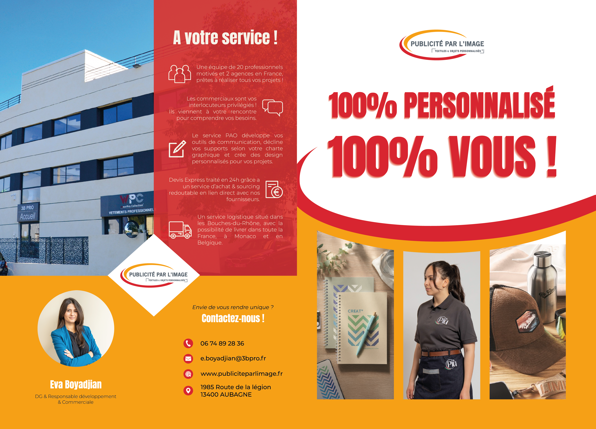
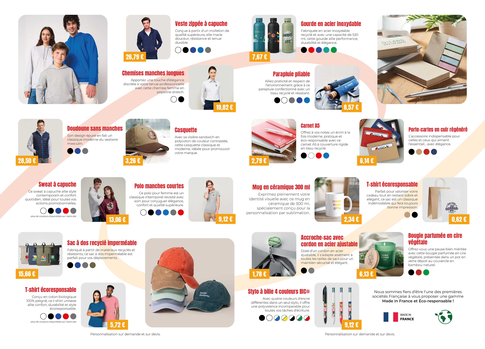
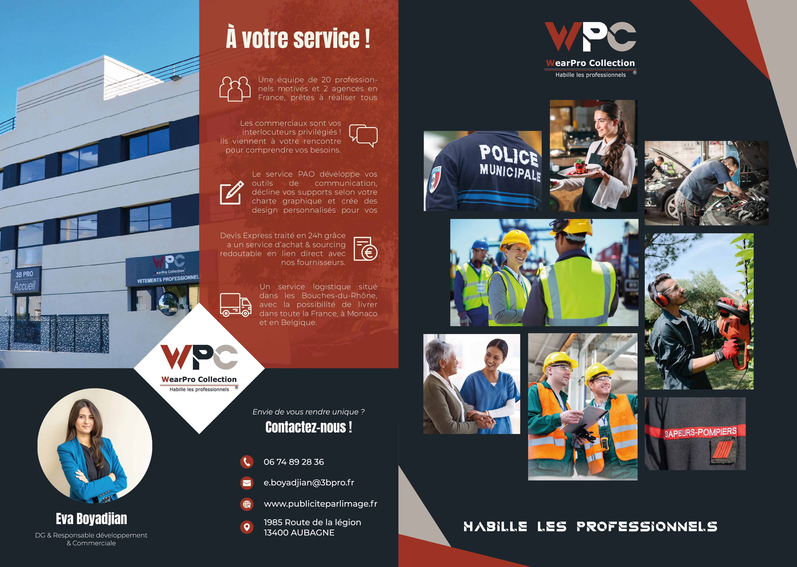
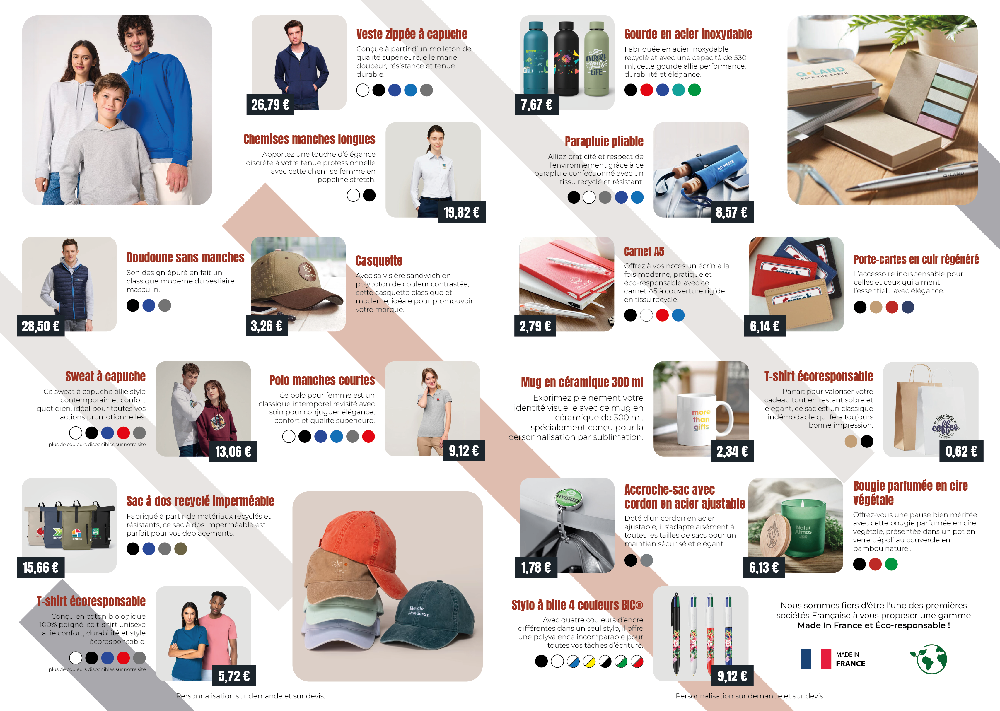

Les différents éléments de communication visuelle réalisés durant mon alternance en troisième année du BUT MMI, au sein de l'entreprise 3B PRO.
Lors de mon alternance au sein de l’entreprise 3B PRO, je me suis vu confier la réalisation de différents supports imprimés pour la communication externe de l’entreprise. N’ayant pas une charte graphique très dense à disposition, j’ai essayé de créer des raccords visuels entre mes productions pour donner de la cohérence graphique à la globalité.
Une de mes premières missions fut de produire un premier flyer de prospection pour la branche principale de l’entreprise. J’ai commencé par créer la première et la quatrième de couverture, pour produire un visuel graphique cohérent comportant toutes les informations nécessaires. Puis, j’ai créé une grille comportant tous les articles demandés.


Par la suite, j’ai adapté ce premier flyer dans la charte graphique de la branche secondaire de l’entreprise. J'ai repris les codes graphiques du premier flyer, en adaptant les couleurs et les éléments visuels.



Pour représenter au mieux l’entreprise, j’ai créé des nouvelles couvertures pour les catalogues de nos principaux fournisseurs. Cela permet aux commerciaux de fournir des catalogues personnalisés aux clients. J’ai d’abord créé une version définitive pour un des catalogues, puis je l’ai décliné pour chaque fournisseur.

J’ai également dû remettre à jour l’ancien catalogue, en modifiant les références, les prix, les photos d’illustrations et les descriptions. J’ai produit une nouvelle couverture pour ce magazine, mais après les retours de la direction, des ajustements ont étaient nécéssaires. J’ai dû faire preuve de flexibilité pour répondre aux demandes.
 Cependant, l’entièreté du catalogue avait été produite sur Photoshop, avec un fichier par page. J’ai donc dû m’adapter à ce fonctionnement, et reprendre en main un projet commencé par une autre personne.
Cependant, l’entièreté du catalogue avait été produite sur Photoshop, avec un fichier par page. J’ai donc dû m’adapter à ce fonctionnement, et reprendre en main un projet commencé par une autre personne.

Version 1 - page de couverture

Version 2 - page de couverture

Version 3 - page de couverture
Enfin, il m’a été demandé de produire un nouveau panneau publicitaire. Situé à l’entrée de la société, et donnant directement sur la route, ce panneau a pour but d’attirer de nouveaux clients. J’ai reçu un brief détaillé des attentes, et j’ai produit plusieurs itérations avant d’obtenir le résultat final.
 Mes difficultés générales :
Mes difficultés générales :Ma principale difficulté a été de produire des visuels avec une cohérence graphique, alors que je n’avais que les couleurs de l’entreprise en tant qu’identité visuelle. J'ai dû faire preuve de créativité, et créer des éléments visuels récurrents pour créer des raccords graphiques entre mes différentes productions. J’ai également dû m’adapter à des demandes de dernière minute, et faire preuve de flexibilité pour répondre aux attentes de la direction.
En parrallèle de mes productions pour la communication visuelle de 3B PRO, j'ai également produit les éléments de la chaîne de production principale de l'entreprise, pour la personnalisation d'objets et de textiles.
Dans la chaîne de production des commandes, je suis en charge de la création des visuels "avant commande", des Bon à Tirer (BAT), de la création de design et de leurs impressions pour la personnalisation. Je me devais de respecter les contraintes techniques et esthétiques de chaque support, mais également la charte graphique de chaque entreprise.
Voici quelques exemples de design que j'ai produits :


Visuel pour un carré de soie

Sélection de visuels pour les goodies du Delta Festival

Visuel pour un t-shirt avec création de logo

Visuel pour des pins
Ma réussite majeure a été la standardisation de la communication de l'entreprise. En déclinant les couvertures de catalogues et en adaptant les supports pour les différentes branches (PPI/WPC), j'ai fourni aux commerciaux des outils professionnels et harmonisés.
Aujourd'hui, mon axe d'amélioration principal serait de créer une charte graphique complète, afin d’établir une véritable identité visuelle pour l’entreprise.